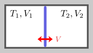
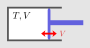
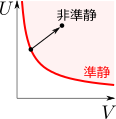

前章の問題を変更し、仕切りを「熱を通さないもの（＝断熱仕切り）」に取り換えよう。即ち、始状態として右図のように、固定された断熱仕切りがある状態で、それぞれの部屋の温度・体積を
𝑇1,𝑉1
および
𝑇2,𝑉2
にする。その後、仕切りの固定を外して自由に動けるようにすると、仕切りは勝手に動き、最終的にどこかで止まる。その時の平衡状態を知りたい、という問題である。右図の
↔𝑉
という表記は、仕切りの位置（だけ）が自由に変化できることを表す。熱の移動はできない。
断熱仕切りの終状態は、仕切りの動きに依存する
未知数は、終状態における各部屋の温度・体積の4つである：
𝑇′1,𝑉′1,𝑇′2,𝑉′2
（終状態であることを
′
で表す）。これを、始状態
𝑇1,𝑉1,𝑇2,𝑉2
（と状態方程式などの気体の性質）から導きたいわけである。
しかし、条件式が足りない
前章の場合と違って、仕切りが熱を通さないので、両方の部屋の温度が一致するという条件
𝑇′1=𝑇′2
が成り立たなくなる。そのため、未知数4に対して、条件が3つ両部屋の圧力の一致、エネルギー和の保存、体積和の保存。しかない。ということは、一意的に終状態が決まらないよのだろうか。それとも、まだ未知の条件が残っていて、一意的な終状態が存在するのだろうか。
終状態は、仕切りの動く速さに依存する
結論から言うと、終状態は一意的に決まらないことが実験的に知られている。特に：
終状態は、仕切りが動く速さに依存する(1)
例えば、仕切りが非常に重い場合、仕切りが長時間にわたって振動しながらゆっくりと減衰していく。軽い場合は、素早く動いてすぐに平衡状態になる。たどり着く平衡状態は、両者で異なる。
1容器系から議論を始めよう
この章の目的は、性質(1)を理解することである。まずは一方の部屋だけに着目して、仕切りの移動速度が終状態に与える影響を考えるのが自然だろう。その考察を足掛かりに、2つの部屋を考慮した時の性質(1)を導出するという戦略をとることにしよう。3.11つの容器の変形3.2冒頭の問題3.3参考 エントロピー増大の法則
3.11つの容器の変形

この節では、1容器の系について、容器の変形速度を変えたときに、終状態がどう変化するかを考える（変形後の体積は固定とする）。容器の変形は、右図のように、ピストンで代表する。
圧力に着目すればよい
前章で見たように、平衡状態を決めるのはエネルギーと体積である。今は体積が固定なので、エネルギーだけで変形後の平衡状態が決まる。さらに、容器の変形時のエネルギー変化は、ピストンに加わる力、即ち、圧力で決まる。よって結局、圧力がピストンの移動速度にどう依存するかを考察すればよい。変形時のエネルギー変化と圧力の関係式は、以下の【3.1-注1】の式(4)である。
3.1.1膨張時 ⇒ ゆっくり動かしたほうが圧力が大きくなる
まず、ピストンを引いて一定量だけ容器を膨張させる操作を考える。
非常に速く膨張させると 𝑃=0
例えば極端な場合として、非常に早くピストンを引く場合を考える。容器内部の分子の速度よりも早くピストンを引くと、分子がピストンに追いつけず衝突できなくなる。よって、容器がピストンに与える圧力
𝑃
はゼロになる。
膨張が遅いほど 𝑃 が大きくなる
そこまで速くない場合でも、ピストンの動きが速いほど、分子からより速く逃げる形になるので、圧力は小さくなる。結局、圧力には上限があり、それは、無限にゆっくり膨張させた時である。準静操作無限にゆっくりとした操作のことを、準静的な操作または準静操作という。この用語にはバリエーションがある：準静膨張、準静変形など。なお、準静操作という用語を使う時、ピストンの摩擦はないものとする（摩擦があると摩擦熱で容器の温度が上がって理論的な見通しが悪くなるので）。
3.1.2圧縮時 ⇒ ゆっくり動かしたほうが圧力が小さくなる
今度は逆に、ピストンを押して一定量だけ容器を圧縮する場合を考える。
圧縮が遅いほど 𝑃 が小さくなる
ピストンを速く押すと、分子との相対速度が大きくなるので、圧力が大きくなる。これに加えて、ピストン周辺に分子が寄せ集まる効果もあるので、衝突する分子数が増えてさらに圧力を高める要因になる。よって、圧力には下限があり、それは準静的に圧縮した場合である。
3.1.3平衡状態は断熱曲線の下側に移行できない
圧力に関する上記の結果を、エネルギーの結果に焼き直そう。
準静操作の場合にエネルギー最小
ピストン操作が準静的である時、操作後の容器のエネルギーは以下のようになる：
圧力操作後の容器のエネルギー膨張時最大最小圧縮時最小最小
膨張時は、圧力が大きいほど容器のエネルギーが減る。圧縮時は、圧力が大きいほど容器のエネルギーが増える。よってこの表のようになる。以下の【3.1-注1】参照。膨張・圧縮ともにエネルギーが最小になる。あらゆる変形操作は膨張・圧縮の組み合わせなのだから結局、任意の変形に対して、準静操作の場合に、操作後の容器のエネルギーが最小になるということである。
断熱容器の操作では断熱曲線の下側に移行できない

この性質を
𝑉-𝐸
グラフで図示すると、右図のようになる。準静操作の場合はある曲線上（断熱曲線という）を動く。逆に、素早く操作した場合は、曲線の右上側（＝高エネルギー側）に移動する。特に、断熱曲線の左下側の平衡状態へは移行不可能である。以上をまとめると、断熱操作の場合、以下が成り立つ：
準静操作→断熱曲線上を動くそれ以外→断熱曲線の右上領域へ移動する}(2)
断熱曲線断熱曲線を求めるには、式(4)の
𝑃
を状態方程式
𝑃𝑈𝑉
に置き換えて得られる微分方程式：
𝛿𝑈≐−𝑃𝑈𝑉𝛿𝑉(3)
を積分すればよい。なぜなら、準静操作では常に平衡状態が保たれているため、圧力は常に
𝑃𝑈𝑉
だからである。異なる断熱曲線が交わることはない（力学編15.3節によりこれは課可積分な拘束条件である）。
【3.1-注1】容器変形時のエネルギー変化
容器の体積を
𝛥𝑉
だけ変化させた時、容器のエネルギーの変化
𝛥𝑈
と圧力
𝑃
の関係式は
𝛥𝑈=−𝑃𝛥𝑉(4)
である。ただし、変形中は
𝑃
が一定値であるとする。
導出
1エネルギー変化
𝛥𝐸
を力
𝑓
で表す
容器のエネルギー変化は
𝛥𝑈
、ピストンが容器内の物質から受ける力の大きさを
𝑓
として
𝛥𝑈=−𝑓𝛥𝑥
となる。ただし、
𝛥𝑥
は、ピストン位置の変化量である（膨張方向が
+
）。
2
𝑓
を
𝑃
で表す
𝑓
と圧力
𝑃
の関係は、ピストンの面積
𝐴
を用いて
𝑓=𝑃𝐴
である。
3
𝛥𝑈
を
𝑃
で表す
よって
𝛥𝑈
と
𝑃
の関係式は
𝛥𝑈=−𝑃𝐴𝛥𝑥
である。
𝐴𝛥𝑥
は体積変化
𝛥𝑉
そのものなので、式(4)が得られる。
◼
なお、ここでは導出しないが、式(4)は、ピストンのような単純な変形に限らず、一般の変形で成り立つ。
3.2冒頭の問題
さて、1容器の場合については前節できれいな結果が得られた。そこで、冒頭の問題に戻ろう。断熱壁で仕切られた2つの部屋は、2つの断熱容器が接触したものとみなせる。従って、それぞれの部屋に対して、断熱曲線が定義できる。
3.2.1終状態は、仕切りの速度に依存する
仕切りの速度によって終状態が変化するような系を、実際に構成することを考える。
終状態が仕切りの速度に依存する例
まず、両方の容器には、それぞれ平衡状態への緩和時間が異なる気体が入っているとする。容器1は素早く平衡状態になり、容器2は平衡状態に落ち着くまでにより時間がかかるとする。この状態で仕切りの質量を変えてみよう。
重い仕切りの場合
仕切りが重くゆっくり動くとする。その場合、容器1は準静変形を受けているとみなせるので、断熱曲線上にほぼ留まる。容器2は平衡状態への緩和時間が遅いため、準静変形をしているとはみなせない。よって、断熱曲線からずれる。
軽い仕切りの場合
一方、仕切りが軽い場合、仕切りは素早く動くため、容器1についても断熱曲線からからずれてしまう。異なる断熱曲線同士は交わらないので、元の断熱曲線上の状態とは必ず異なった状態になる。よって、重い仕切りの場合とは終状態が異なる。
◼
3.3参考 エントロピー増大の法則
ここまで、断熱曲線が重要な役割を果たしてきた。この概念をより扱いやすくするため、断熱曲線と同じ情報を持つ、エントロピーという量
𝑆𝑈𝑉
を定義しよう。
3.3.1エントロピーの定義
エントロピー
𝑆𝑈𝑉
の定義は、以下のとおりである：
条件1:断熱曲線と等エントロピー線𝑆𝑈𝑉=const.が一致する。条件2:断熱曲線の右上側に行くと𝑆𝑈𝑉が大きくなる。
各条件に対する補足
いくつか補足しておこう。
条件1を数式で表す
条件1を数式で表せば、等エントロピー線の定義
𝑆𝑈𝑉=const.
を微分したもの：
(𝛿𝑆𝑈𝑉≐)𝑆˙𝑈𝑉𝛿𝑈+𝑆𝑈˙𝑉𝛿𝑉≐0
が、断熱曲線の微分方程式(3)：（再掲）
𝛿𝑈+𝑃𝑈𝑉𝛿𝑉≐0(5)
と一致するということである。
𝑆𝑈𝑉
は常に存在する力学編の15.3節でも述べたように、2変数の拘束条件(5)は必ず可積分である。即ち、式(5)と
𝛿𝑆𝑈𝑉≐0
が一致するような関数
𝑆𝑈𝑉
は常に存在する。
条件2は慣例
条件2のように、高エネルギー側で
𝑆𝑈𝑉
が大きくなるようにとるのは（今の段階では）慣例である。単調関数にすることで、エントロピーの値を指定すれば断熱曲線が一意的に決まる。第5章の予告これら2つの条件だけだと、「断熱曲線ごとにどのようなエントロピー値を割り当てるか」にかなり任意性がある。第5章で、複数容器のエントロピーを考えることで、この任意性が解消することを見る。
3.3.2断熱曲線の性質を、エントロピーを使って表現し直す
断熱曲線を用いて表現された性質(2)は、エントロピーを用いて書き直すと見やすくなる。
エントロピー増大の法則
即ち、断熱容器に対して以下が成り立つ：
準静操作→エントロピーが保存するそれ以外→エントロピーが増大する}(6)
このように、断熱容器ではエントロピーを減らすことはできない。これをエントロピー増大の法則という。
エントロピーは不可逆性の尺度である
ある平衡状態
𝐴1
に何らかの操作を行った結果
𝐴2
になったとする。この時、エントロピーが大きくなっていれば、その逆操作
𝐴2→𝐴1
は（エントロピーを減らす操作であるため）断熱的には不可能である。即ち、エントロピーの値を見ることで、ある断熱操作が不可逆かどうかを判定することができる。次章の予告次章では、この不可逆性の尺度としてのエントロピーを、複数の容器が相互作用しているケースに拡張することがテーマとなる。
3.3.3参考 理想気体のエントロピー
参考までに、理想気体のエントロピーを以下の【3.3-注1】に示す。
【3.3-注1】理想気体のエントロピー
理想気体のエントロピー
𝑆
は、以下のようになる：（
(𝑈,𝑉)
表示と
(𝑇,𝑉)
表示）
𝑆𝑈𝑉=𝐶log𝑈+𝐾log𝑉+const.𝑆𝑇𝑉=𝐶log𝑇+𝐾log𝑉+const.
単位は
kgm2s−2K−1
である。ただし、理想気体のエネルギー関数
𝑈𝑇𝑉
および状態方程式
𝑃𝑇𝑉
は、それぞれ
𝑈𝑇𝑉=𝐶𝑇𝑃𝑇𝑉=𝐾𝑇𝑉⎫{
{⎬{
{⎭(7)
である（
𝐶,𝐾
は定数）。
導出
まず、
𝑆𝑈𝑉
は、式(5)を変形すれば得られる：
0≐𝛿𝑈+𝑃𝑈𝑉𝛿𝑉∣
∣
∣
∣
∣
∣式(7)を使うと：𝑃𝑈𝑉=𝐾𝑉𝑇=𝐾𝑉𝑈𝐶=(𝛿𝑈+𝐾𝑉𝑈𝐶𝛿𝑉)=𝑈𝐶(𝐶𝛿𝑈𝑈+𝐾𝛿𝑉𝑉)≐𝑈𝐶𝛿(𝐶log𝑈+𝐾log𝑉)𝑈𝑉⏟____⏟____⏟≡𝑆𝑈𝑉
となる。
𝑆𝑇𝑉
は、この
𝑆𝑈𝑉
に式(7)のエネルギー関数を代入して
𝑈
を消去すればよい。
◼
積分因子の任意性がある
前述のように、エントロピーには積分因子の分だけ任意性がある。ここでは、第5章で見るように、エントロピーが加法的になるようなものを採用している。また、原点の取り方に任意性がある。